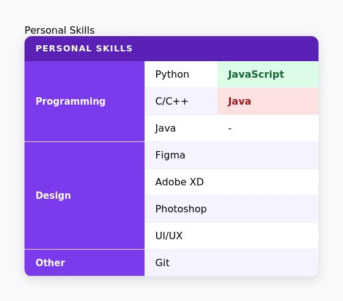

Lab 4 - CSS selectors, box model, typography, and styling fundamentals
Duration: . This lab continues from Lab 3: you keep the same Git and GitHub Pages workflow and add CSS styling to the pages already created in your site. You will use CSS selectors, the box model, typography, backgrounds, and color to visually enhance your site. See Lecture 2 - CSS and Resources.
On this page: Overview · Lab setup · CSS · Task 1 · Task 2 · Task 3 · Task 4 · Extra · References.
Overview
Objectives
- Clone Lab 3 repository to continue working on your course site with the same Git/GitHub Pages workflow
- Apply CSS styling to your existing pages:
- Style the tables on the index page (Personal Skills and Portfolio) using CSS selectors, box model, and color
- Create a hero banner section on the index page with a background image and typography overlay
- Use external, internal, and inline CSS appropriately throughout the project
- Commit changes to your GitHub Classroom Lab 4 assignment.
Concepts
- CSS selectors: element, class, id, descendant,
:nth-child(),:hover,:focus - Box model:
margin,padding,border,border-radius,box-shadow,width,height - Typography:
font-family,font-size,font-weight,line-height,letter-spacing,text-transform,text-align, Google Fonts - Backgrounds and color:
background-color,background-image,background-size,background-position,color,rgba(), gradients - Git/GitHub workflow: clone repository, commit, push, and link updates to GitHub Pages
Tasks (see sections below): clone Lab 3 → apply CSS to index page tables (selectors + box model + color) → create a hero banner section (background + typography) → push to GitHub → HTML/CSS validation.
Deliverable: A visually styled site with CSS applied to the tables and a hero banner section, using external, internal, and inline CSS as required, committed to your GitHub Classroom Lab 4 repository and validated.
Lab setup
Before starting, ensure you have completed Lab 3 and have access to your course homepage and your private Lab 3 repo. For Lab 4 you will need the same tools: a code editor, Git, and a browser. Use the task order below; the final step is pushing to GitHub (Task 4).
- Setup and page structure: Accept the Lab 4 assignment, clone your Lab 3 repository, and continue working on the existing pages. You will modify
index.htmlto add CSS styling and a new hero section. - Apply CSS styling:
- Index page: style the existing tables using an external CSS file
- Personal Skills table – apply box model, alternating row colors, and hover effects using CSS selectors
- Portfolio table – apply matching style with header color, padding, and shadow
- Index page: add a hero banner section with background image, typography, and a semi-transparent overlay
- Index page: style the existing tables using an external CSS file
- CSS and HTML validation: Validate all pages using the W3C validator and the W3C CSS validator; fix any errors. Your HTML and CSS must pass validation before committing or pushing changes.
- Commit and push: Commit your validated changes and push them to your GitHub Classroom Lab 4 assignment.
CSS
CSS (Cascading Style Sheets) is used to control the visual presentation of HTML elements. It separates structure (HTML) from style (CSS), making pages easier to maintain and redesign. CSS rules consist of a selector that targets elements, and a declaration block with one or more property: value pairs.
Ways to apply CSS
There are three ways to include CSS in a web page, each with a different scope and use case:
- Inline CSS – applied directly to a single HTML element using the
styleattribute. Has the highest specificity and overrides other styles. Best used only for quick, one-off overrides.<p style="color: red; font-weight: bold;">This text is red and bold.</p> - Internal CSS – written inside a
<style>tag in the<head>section of the HTML file. Applies only to that page. Useful for single-page styles or quick testing.<head> <style> h1 { color: navy; font-size: 2rem; } </style> </head> - External CSS – written in a separate
.cssfile and linked to the HTML using a<link>tag. Best practice for real projects: styles are shared across all pages and easy to maintain.<!-- In the <head> of your HTML --> <link rel="stylesheet" href="style.css">/* In style.css */ body { font-family: Georgia, serif; background-color: #f9f9f9; }
CSS Selectors
Selectors determine which HTML elements a CSS rule targets. For each selector type below, the HTML shows what you write in the page and the CSS shows how you style it.
Element selector – targets all elements of a given type. Here every <p> on the page becomes gray:
<!-- HTML -->
<p>This is a paragraph.</p>
<p>This is another paragraph.</p>/* CSS */
p {
color: gray;
font-size: 1rem;
}Class selector – targets only elements that have a specific class attribute. Multiple elements can share the same class. The selector starts with a dot (.). Here, only the second paragraph is highlighted:
<!-- HTML -->
<p>This paragraph is not highlighted.</p>
<p class="highlight">This paragraph IS highlighted.</p>/* CSS */
.highlight {
background-color: yellow;
font-weight: bold;
padding: 4px 8px;
}ID selector – targets one unique element identified by its id attribute. An ID must be unique per page. The selector starts with a hash (#):
<!-- HTML -->
<h1 id="main-title">Welcome to my site</h1>
<h1>This heading is not affected.</h1>/* CSS */
#main-title {
font-size: 2rem;
color: navy;
text-align: center;
}Descendant selector – targets elements that are inside a specific parent element. Here only <td> cells that are inside a <table> are affected:
<!-- HTML -->
<table>
<tr>
<td>Cell 1</td>
<td>Cell 2</td>
</tr>
</table>
<p>This paragraph is not a td, so it is not affected.</p>/* CSS */
table td {
padding: 8px 12px;
border: 1px solid #ccc;
}Pseudo-class :nth-child() – targets elements based on their position among siblings. Useful for alternating ("zebra") row colors in tables:
<!-- HTML -->
<table>
<tbody>
<tr><td>Row 1 – white</td></tr>
<tr><td>Row 2 – light gray</td></tr>
<tr><td>Row 3 – white</td></tr>
<tr><td>Row 4 – light gray</td></tr>
</tbody>
</table>/* CSS */
tbody tr:nth-child(even) {
background-color: #f2f2f2;
}Pseudo-class :hover – applies a style only while the user's mouse is over the element. Removed as soon as the mouse leaves. A classic use case is changing the appearance of links on hover:
<!-- HTML -->
<a href="https://example.com">Visit my GitHub</a>
<a href="mailto:user@example.com">Send me an email</a>/* CSS */
a {
color: #2563eb;
text-decoration: none;
}
a:hover {
color: #1e40af;
text-decoration: underline;
}Pseudo-class :focus – applies a style when an element is focused (e.g. clicked into or tabbed to with the keyboard). Commonly used on form inputs:
<!-- HTML -->
<input type="text" placeholder="Click here to focus">/* CSS */
input:focus {
border: 2px solid blue;
outline: none;
background-color: #f0f8ff;
}Box Model
Every HTML element is treated as a rectangular box. The CSS box model describes the layers around an element's content:
padding– space between the content and the border (inside the element)border– a line drawn around the padding and contentmargin– space outside the border, separating the element from its neighbourswidth/height– set the dimensions of the content areaborder-radius– rounds the corners of the element's borderbox-shadow– adds a shadow effect around the element
/* Box model example */
.card {
width: 300px;
padding: 16px;
border: 1px solid #ccc;
border-radius: 8px;
margin: 20px auto;
box-shadow: 0 4px 8px rgba(0, 0, 0, 0.1);
}Typography
CSS provides fine-grained control over text appearance. Key properties include:
font-family– sets the typeface, with fallback fonts:font-family: 'Georgia', serif;font-size– sets the text size:font-size: 1.2rem;font-weight– sets thickness:font-weight: bold;orfont-weight: 700;line-height– controls vertical spacing between lines:line-height: 1.6;letter-spacing– adjusts space between characters:letter-spacing: 0.05em;text-transform– changes text case:text-transform: uppercase;text-align– aligns text horizontally:text-align: center;
You can import custom fonts from Google Fonts by adding a <link> in the <head>:
<link href="https://fonts.googleapis.com/css2?family=Merriweather:wght@400;700&display=swap" rel="stylesheet">body {
font-family: 'Merriweather', serif;
}Background and Color
CSS controls both the background and text color of elements:
color– sets the text color:color: #333333;background-color– fills the element background with a solid color:background-color: #f0f4f8;rgba(r, g, b, a)– color with transparency (alpha):background-color: rgba(0, 0, 0, 0.5);— useful for overlaysbackground-image– sets a background image:background-image: url('banner.jpg');background-size– controls how the image is scaled:background-size: cover;(fills the entire element)background-position– positions the image:background-position: center;- Gradient – smooth transition between colors:
background: linear-gradient(to right, #1a1a2e, #16213e);
/* Hero section example */
.hero {
background-image: url('images/background.jpg');
background-size: cover;
background-position: center;
height: 350px;
position: relative;
}
.hero-overlay {
background-color: rgba(0, 0, 0, 0.55);
position: absolute;
inset: 0;
display: flex;
align-items: center;
justify-content: center;
}
.hero-title {
color: #ffffff;
font-size: 2.5rem;
letter-spacing: 0.1em;
text-transform: uppercase;
}References: MDN – CSS, MDN – Box Model, Google Fonts, W3C CSS Validator.
Task 1 – Accept Lab 4 assignment and clone Lab 3
Start by accepting the Lab 4 assignment on the course platform. While logged into GitHub, click Accept this assignment to create your Lab 4 private repository.
Next, open your local project for Lab 3 and make a clone in the Lab 4 repository. This cloned project will serve as the starting point for Lab 4. Ensure that both the index page and the contact/feedback page from Lab 3 are included, together with all three tables, as you will modify them to add CSS styling for Lab 4.
Task 2 – Style your site with CSS
For Lab 4, you will complete three exercises. All CSS rules must be written in an external stylesheet and linked to your HTML, except where inline or internal CSS is explicitly required.
Exercise 1. – CSS Specificity Game
Create a new file called specificity.html and copy the following code into it exactly as written — do not change anything:
<!DOCTYPE html>
<html lang="en">
<head>
<meta charset="UTF-8">
<title>Specificity Game</title>
<style>
p {
color: gray;
font-size: 1rem;
font-family: Georgia, serif;
line-height: 1.4;
padding: 4px 0;
}
.info {
color: steelblue;
font-size: 1.25rem;
background-color: #e8f4fd;
padding: 8px 14px;
border-left: 5px solid steelblue;
font-family: Arial, sans-serif;
}
#warning {
color: darkred;
font-size: 0.8rem;
font-style: italic;
text-transform: uppercase;
letter-spacing: 0.15em;
border: 2px dashed darkred;
padding: 10px;
background-color: #fff0f0;
font-family: 'Courier New', monospace;
}
#warning.info {
color: darkorange;
background-color: #fff7e0;
border: 2px solid darkorange;
font-size: 1.1rem;
font-style: normal;
letter-spacing: 0.03em;
}
</style>
</head>
<body>
<p>Paragraph A</p>
<p class="info">Paragraph B</p>
<p id="warning">Paragraph C</p>
<p class="info" id="warning">Paragraph D</p>
</body>
</html>Open the file in the browser, then create a file called specificity.txt and answer the following:
- Explain which CSS properties each paragraph (A, B, C, D) receives and where each property comes from: element selector, class selector, or id selector.
- Paragraph D matches
p,.info,#warning, and#warning.info. All four definecolor— which value does the browser use and why? What aboutfont-family: which rule wins and why? - Create an external CSS file called
style.cssand add properties for anh1title: choose a color, set afont-style, and addpadding: 10px;. Then, in thebody, create anh1with the texttitle1and check the result. After that, in the same HTML file, add an internal CSS rule forh1inside the<style>tag in the<head>and change the color. Check the result and explain what happens.
Submit specificity.html, specificity.txt, and style.css.
Exercise 2. – Style the Personal Skills table
Style the Personal Skills table from your index.html (built in Lab 3) so that it matches the result shown in the image below. Use an external stylesheet. Your CSS must use at least: a class selector, a descendant selector, :nth-child, and both inline and internal CSS somewhere in the page.

Exercise 3. – Business card
Create a new file card.html with a linked external stylesheet card.css. Create one main div container and inside it add: an image, a title with your full name, a subtitle with your specialisation and current year of study, and below them an email address as a link and a GitHub link on a separate line. Style the page so the final result looks like a pleasant personal card. Personalise all elements with CSS so the design looks clean, balanced, and visually appealing. Use CSS rules for element selectors, class selectors, and id selectors, with at least two examples of each type in your solution.
Task 3 – Push, publish, and submit Lab 4
After completing all CSS exercises and page updates, make sure your repository for Lab 4 contains:
specificity.htmlandspecificity.txt– the specificity game page and your written explanation.index.html– the homepage with the styled Personal Skills table.style.css– the external stylesheet with all CSS rules for the Skills table.card.htmlandcard.css– the business card page and its stylesheet.contact.html(orfeedback.html) – the form page from Lab 3 (no changes required, but must still be present).
Push your final changes to the Lab 4 repository. Open the live GitHub Pages URL and confirm that:
- All pages load correctly.
- The Skills table renders with alternating row colors, a dark header, and a hover effect.
- The business card displays a circular avatar, your name, role, and two contact links.
- External, internal, and inline CSS are all present as required.
Task 4 – HTML and CSS validation
As the final step for Lab 4, ensure that all your pages and stylesheets are validated. Use the W3C Markup Validation Service to check each HTML page and the W3C CSS Validation Service to check your stylesheet.
- Fix all errors and warnings reported by both validators.
- Check that the hero section renders correctly and all CSS properties are valid.
- Check that all tables are still semantically correct after adding class attributes and CSS.
- After fixing issues, push the corrected files to your Lab 4 repository.
Your Lab 4 deliverable is complete only when both index.html and your stylesheet pass validation with no errors. If you find issues after submitting, fix and push them again; the grader may re-check your live site.
Extra work
Extra work [1]: Complete exercises 7-1, 11-1, and 11-2 from the primary textbook (see Resources - Bibliography [1] and Assignments).